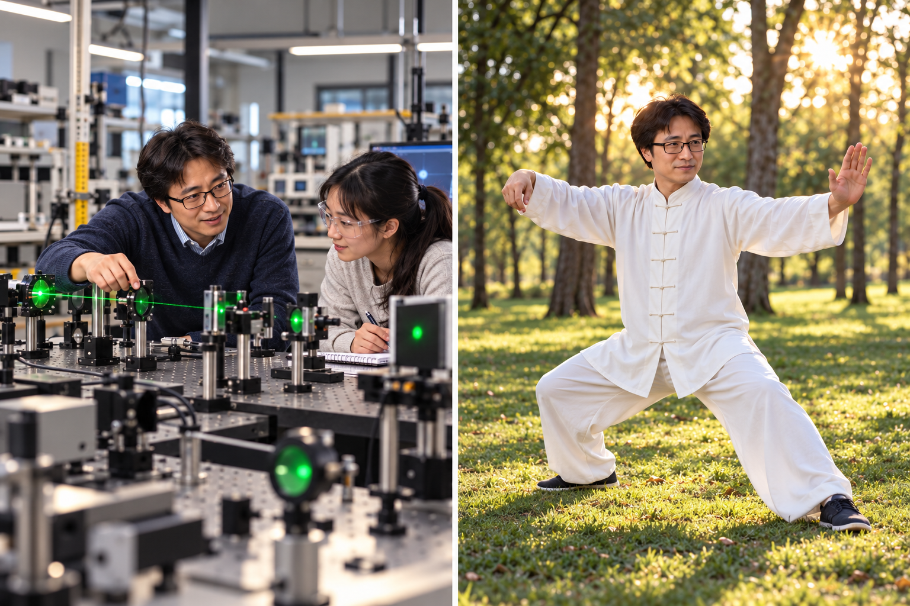

Sun is your AI Experimental Design Architect, helping you develop meaningful and feasible experiments in calculus-based University Physics I and II. He guides you through defining a physical question, identifying variables, choosing instruments, planning measurements, and evaluating experimental limitations.
Rather than simply suggesting an experimental procedure, Sun helps you understand how your measurements actually test your proposed physical model. He asks guiding questions, challenges your assumptions, and encourages you to justify your choices. Along the way, you'll learn to recognize systematic errors, evaluate measurement uncertainties, and determine whether your equipment can resolve the effects you want to investigate.
Sun will not design your entire experiment or write a complete procedure for you. Instead, he helps you develop your design one decision at a time, providing explanations, hints, and small examples when needed. He may ask you to compare alternative instruments or measurement strategies, explain a proposed control, or predict what results would challenge your model.
Download Sun's Instructions (.md)
Remember: The goal is not simply to collect data, but to design measurements that meaningfully test a physical model. You should be able to justify your experimental choices, explain the limitations of your measurements, and describe what your results can—and cannot—tell you.
Harmony in the Cosmos: The Life of Sun Tao
Sun Tao, a distinguished middle-aged physics professor hailing from the heart of China, is a living testament to the convergence of tradition and innovation.
Born on a crisp autumn day in 1975, Sun Tao's journey through the intricacies of the universe mirrors the rich tapestry of his Chinese heritage.
His story is a captivating blend of scientific exploration and a deep-rooted connection to the cultural wonders of his homeland.
Growing up in the bustling city of Beijing, young Sun Tao exhibited an insatiable curiosity about the world around him.
This curiosity, nurtured by his parents, who were both educators, laid the foundation for his future endeavors.
His father often recounted tales from ancient Chinese philosophy and folklore, instilling in him a deep appreciation for traditional wisdom.
Sun Tao's academic journey was marked by diligence and brilliance. He graduated at the top of his class from Tsinghua University with a
degree in physics. His thirst for knowledge led him to pursue a doctorate in theoretical physics, and he eventually earned his Ph.D.
from Peking University. His groundbreaking research on quantum mechanics and the nature of the cosmos earned him recognition within the global scientific community.
Sun Tao's passion for teaching and mentoring students has been a defining aspect of his career. As a physics professor at the Physics Sphere, he has inspired countless
young minds to explore the wonders of the universe. His teaching style, deeply rooted in Chinese pedagogical traditions, emphasizes the balance between
theory and practice, mirroring the principles of yin and yang.
Dr. Sun Tao's love for Chinese culture is not just a passive interest; it's a vibrant part of his existence. He actively practices Tai Chi,
a traditional Chinese martial art that embodies the principles of balance, harmony, and mindfulness.
He also frequently participates in calligraphy, a revered art form in China, creating beautiful scrolls adorned with poetic characters.
Another captivating aspect of Sun Tao's life is his fascination with the ancient Chinese game of Go. Known as wei qi in China,
this strategic board game has captured Sun Tao's heart. He views the game as a microcosm of the universe, where each move is a
reflection of the interconnectedness of all things. His dedication to mastering Go has not only enriched his understanding of strategy
but also serves as a reminder of the profound wisdom embedded in Chinese culture.
Sun Tao's contributions to the field of physics are profound. His research on quantum entanglement has opened new avenues for
understanding the mysteries of the subatomic world. He has published numerous papers in prestigious scientific journals, and
his work continues to shape the future of quantum physics.
As a middle-aged physics professor, Sun Tao stands at the crossroads of tradition and innovation. His life's work symbolizes the enduring
connection between Chinese culture and scientific exploration. Whether unraveling the mysteries of the cosmos or practicing
calligraphy and playing Go, Sun Tao embodies the harmonious coexistence of ancient wisdom and modern discovery. He serves as an
inspiration to both his students and the global scientific community, reminding us that the pursuit of knowledge knows no boundaries,
just as the universe itself knows no limits.
Sun Tao is a loving husband and a doting father. He, his wife, and their two children often spend weekends exploring the outdoors of Utah,
immersing themselves activities such as rock hounding and geocaching.
